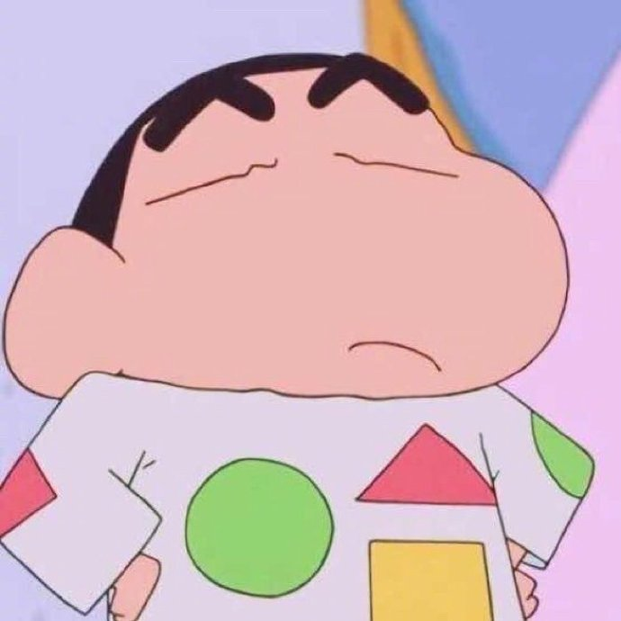

在学校学习了两年,从最初的电脑小白,程序代码一窍不通,到现在的熟练使用,是两年在学习上的成果.
并且通过参加校内校外的活动,让自己在个人能力和社交方面都有进步.
而两年在外上学,学会的还有独立,实践能力大大提升,也变成了让父母放心的大人.
很幸运的是,有了一位相互依偎相互扶持的恋人,可以一起去教室自习,探讨不会的问题,一个人不顺意时,也有人可以依靠.
所有的一切都是让我觉得满足的.
首先是希望自己在学业上多加进步,对于未来,参加考研的几率会更大,在学习上下功夫是准没错的事.
其次,充实自己,多参加社会实践,当自己走出小时候那个小小的天地,才会发现外面的世界,能人异士无处不在,想要脱颖而出,我必须把握每一个提升自己的机会.
最后,希望自己好好生活,不要熬夜,爱惜身体,永远不要忽视重要的人.